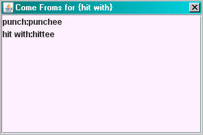
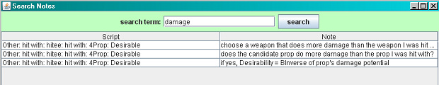
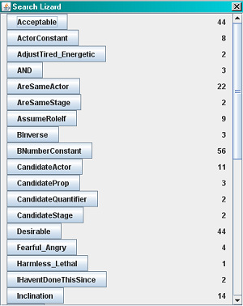
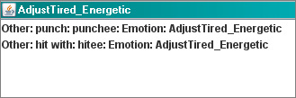
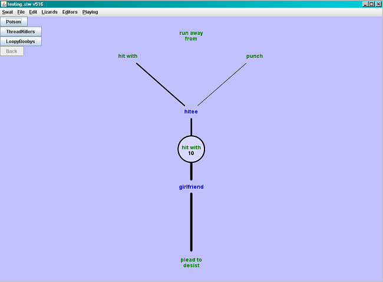
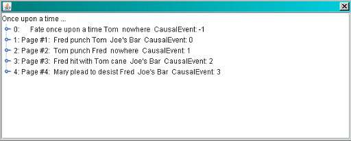
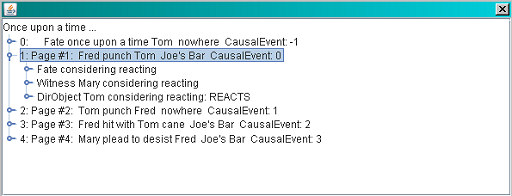
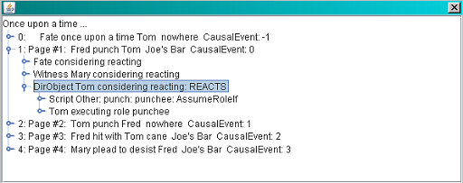
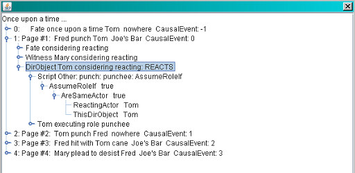

You know how so many programs come equipped with "Wizards" that will help you automagically do all sorts of wonderful things? You know how, when you try to use those "Wizards," they are often unable to solve your problem for you, because they're actually pretty stupid? Have you ever resented the hype that calls these stupid functions "Wizards?"
Now you know why we call ours "Lizards."
Lizards are special functions to assist the Author in creating a Storyworld. They provide you with special ways of examining your Storyworld and its performance. Scriptalyzer is a kind of lizard, but was kicked out of the Lizard Academy for being a nerd. The other Lizards are:
ComeFrom Lizard
Whenever you look at a Verb, you can readily see where it goes by just looking at the Options under the Roles for that Verb. So it's easy to see where things go—but what if you want to know where they come from? What if you want to know how somebody could have gotten to the Verb you're editing? That's what ComeFrom Lizard is designed to do. Just go to the Lizards menu and select the top item, "ComeFrom Lizard" and you'll see a new pink window pop up:

ComeFrom Lizard lists all the Verb: Role combinations that have the selected Verb as an Option. If you double-click on one of the listings, SWAT will jump to that Verb: Role. Whoosh!
Notes Lizard
Here's a little scripting trick we haven't told you about: you can annotate your scripts. Start with any Script in your storyworld and select any Operator. Hit the "return" key on your keyboard. Look! By the magic of modern technology, a little text box appears! Of course, you don't get a lot of space in which to work; although you are free to type as much as you want, only the first line of your text is visible when you're done. Still, it's a useful feature for two reasons:
First, you can explain what you're doing in that part of the Script. This can be very useful when you come back several weeks later and ask, "What does this do?" Think of it as a little reminder.
Second, you can use special terms that are unique to a certain type of calculation, and then later use can use them to find all the Scripts that include those special terms. This can be very handy, because after a while your storyworld gets full of thousands (we're not exaggerating: thousands) of Scripts and you forget what went where.
Let's try it out. Go to the hit with: hittee: hit with: 4Prop: Desirable script in our testing storyworld.
PickUpperIf of:
TopGreaterThanBottom(BNumber) of:
Harmless_Lethal of:
CandidateProp
Harmless_Lethal of:
This4Prop
BInverse of:
Harmless_Lethal of::
CandidateProp
-0.99
What the heck did this script do? Oh, yes. It chose a weapon that did more damage than the weapon the hittee was just hit with.
Click on PickerUpperIf of: at the top of the script, and hit return. A Notes box appears. Type in: "choose a weapon that does more damage than the weapon I was hit with."
Now click TopGreaterThanBottom(BNumber) of: and add the note, "does the candidate prop do more damage than the prop I was hit with?"
Next, add a note to BInverse of: that says "if yes, Desirability = BInverse of prop's damage potential."
Finally, click on the -0.99 in the last line and give it this note: "if no, Desirability = minimum."
Now select "Notes Lizard" from the "Lizards" menu. A wide, short window appears. Type in the keyword "damage." Notes Lizard will search through all the annotations in all the Scripts and find every Script containing that word:

If you double-click on the Script identification, the
Verb Editor will jump directly to that Verb, Role, and Script (in this case they're all the same). You can use this search-notes capability by using certain keywords in your script Notes, to help you find and edit similar scripts.
Search Lizard
Suppose that you've been working on your scripts and you realize that have made a consistent mistake in the way you have used the Operator AdjustTired_Energetic. You want to correct those mistakes, but how can you find every instance of your use of AdjustTired_Energetic? Search Lizard is the lizard for you. Just select it from the Lizards menu and you'll see a window listing every single Operator you use in your Scripts, along with how many times you have used that Operator:
If you scroll down through the window, you can find AdjustTired_Energetic. Simply click on the button and you'll see a new window listing every single Script that uses AdjustTired_Energetic:

Just double-click on the Script listing and the
Verb Editor will jump directly to that Script so you can work with it.
Search Lizard has other uses. At the very top of the Operator listing will be any "undefined element" Operators. These all begin and end with question marks. These are the prompt Operators that are automatically inserted into a Script when you add an Operator. You are supposed to fill them in with normal Operators, but sometimes we overlook these things. When the Engine tries to run them, it creates Poison, which kills that part of the story (see Poison for further information). Therefore, you can use Search Lizard to locate any of these incomplete Operators and fill them in with the proper values.
Rehearsal Lizard
In creating a storyworld, you often set up clusters of Verbs that link to each other. It's hard to know from looking at the Inclination Scripts just how often Verb A leads to Verb B. You could create a rich, dense cluster with all sorts of interesting possibilities, but in practice you might see all that richness ignored and the storytrace always traversing the same path through the cluster. How can you find out whether this happens? Turn to Rehearsal Lizard, and your problem will be solved.
To use Rehearsal Lizard, you first select and jump to the first Verb in the cluster, the one that initiates the action. Then select Rehearsal Lizard. He'll show you a new window:

In the example above, the starting Verb was "hit with." That Verb was executed 10 times. It has two Roles (hittee and girlfriend). The black lines indicate how many times each of the Roles was activated. In this example, "hittee" was activated four times and "girlfriend" was activated the rest of the time.
From the Roles we branch out to the Options. The "hittee" Role leads to two Options (hit with and punch), or which hit with was chosen three times and punch was chosen once. For the "girlfriend" Role, the only Option possible was plead to desist, which was chosen six times.
Roles are drawn in blue (they represent Actors) and Options are drawn in green (they represent Verbs). The number of occurrences of the central Verb is presented inside its circle. The width of the line indicates the number of times a Role was assumed or an Option chosen. Clicking on an Option jumps to a new display showing that Option in the central position with its results.
The buttons in the upper left corner provide details on some of the common problems with storyworlds:
Poison
Lists all instances of Poison and which Script generated it.
ThreadKillers
Lists all Verbs whose execution failed to generate a reaction, killing that thread.
Loopy-Boobies
Lists all Verb sequences in which Actors got caught in a loop.
Storyteller Lizard
This Lizard runs the Storyteller package inside SWAT. Storyteller is the software the player uses to experience your storyworld. The Storyteller Lizard allows you to make test runs of your storyworld without having to leave the storyworld development environment.
Log Lizard
This is the single most powerful analytical tool for understanding the operation of storyworlds. Every time the Engine makes a critical decision, including every single Operator of every Script, it logs its decision and the basis for making that decision. This allows you to review the Events that took place during a storyworld and figure out why things happened the way they did.
The amount of information generated by the logging is enormous. This takes a lot of memory and slows down the CPU, so we urge you to keep Storyteller Lizard sessions to less than a thousand Events. Moreover, the amount of information that Log Lizard generates is humongous, so we present it to you in an organized fashion that makes it easier to find what you're looking for:

This is the basic Log Lizard window. Five
Events took place during the storyworld; each Event has its own "Page" in the HistoryBook. The time at which the Event took place is listed along the left edge. The Event itself is presented in abbreviated form, followed by the name of the Stage on which the Event took place and the page number of the Event that caused this Event to take place. For example, at time 2 and page 2, Tom punched Fred. This took place on the Stage called "Joe's Bar" and was a response to Event 1, when Fred punched Tom. Let's analyze how that happened. We do so by clicking on the sideways lollipop icon by Event 1, on the extreme left edge:

This expands the "node" for Page 1, so we can see how each
Actor reacted to Fred's action. You can see that both Mary and Tom considered reacting, but only Tom actually did react. Let's examine that process by clicking on the lollipop on the left edge of Tom's line:

This doesn't add much new information; let's examine the first item more closely. This time we'll double-click on the line starting with "Script Other," which opens up everything underneath that node. (This way we don't have to single-step opening the whole thing up):

This is the AssumeRoleIf Script that determines whether an
Actor assumes a Role. You can see that it generated an AssumeRoleIf value of true—it decided that yes, it would assume that Role. How did it decide that? Because the Operator underneath it (AreSameActor) had a value of true. And how did AreSameActor get a value of true? Because when it compared ReactingActor (whose value is Tom) with ThisDirObject (whose value is also Tom), it found that the two Actors are in fact the same Actor: Tom!
You can learn more about the operation of the Engine by digging into some of the other Events. It's all laid out there for you in complete detail. If ever you have a problem, you can see exactly how it happened with Log Lizard.
Previous tutorial: Scriptalyzer This is the last tutorial in Group 2, Tools.